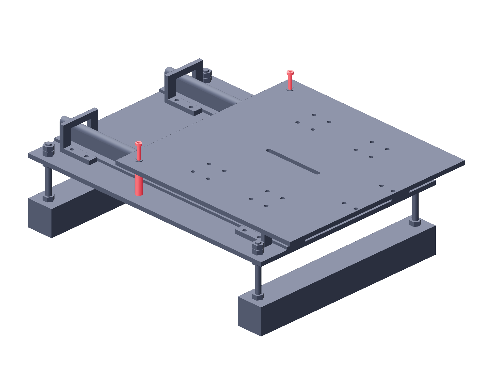

Observation / two stages147 / 179
Fit the two forward clamp bolts
Two through-bolts and 40 mm metal tubes rigidly lock each stage in its forward working position. They are completely removed before manual retraction.
AddPer stage: 2 M5 × 70 · 2 metal tubes, 40 mm long, OD ≥10 mm / ID 5.5–6 mm · washers / nuts
Tools / setup4 mm hex · 8 mm wrench

- Slide the empty carriage to its +100 mm forward datum.
- Place both metal tubes between plates at the matching return holes.
- Start both bolts with washers and nuts before tightening either.
- Seat both clamps progressively without changing plate level.
Ready when
Both clamps are metal-to-metal and the forward carriage cannot slide under a gentle hand check. One clamp or a compressed printed tube permits optical movement. Correct the two metal clamps before calibration.